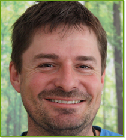

AUSBILDUNG
Michael Konze
| 1993 bis 1995 | Ausbildung und staatl. Prüfung zum Forstwirt |
| bis 2003 | Ausbildung und Prüfung zum Seilkletterer Stufe A, B und C (Die Ausbildung wird von Versicherungen und Berufsgenossenschaften für seilunterstützte Arbeiten vorgeschrieben) |
| 2004 | Ausbildung und Prüfung zum European Tree Worker |
| 2004 | Zulassung durch die Berufsgenossenschaft, für Motorsägenarbeiten in Hubarbeitsbühnen ohne Trenngitter |
| 2004 bis 2005 |
Ausbildung und Prüfung zum European Tree Technician
(Höchste internationale Ausbildung im Bereich Baumpflege) Ausbildung und staatl. Prüfung zum Fachagrarwirt für Baumpflege und Baumsanierung (Höchste nationale Ausbildung im Bereich Baumpflege) |
| August 2006 |
Michael Konze wurde vom Landwirtschaftsminister Josef Miller und
Gartenbaupräsident B. Basso, auf der Bundesgartenschau in München,
mit dem Meisterpreis für besonders gute Leistungen in der Prüfung
zum Fachagrarwirt für Baumpflege und Baumsanierung ausgezeichnet. Alle Mitarbeiter haben die von Versicherungen und Berufsgenossenschaften vorgeschriebene Seilkletterausbildung SKT A und B, was den Einsatz von seilunterstützten Arbeiten mit der Motorsäge im Baum erlaubt. |
| 2005 bis Heute | Zahlreiche Fort- und Weiterbildungen im Fachverband geprüfter Baumpfleger. |

Holger Laur
| 1993 bis 1995 | Ausbildung und staatl. Prüfung zum Forstwirt |
| bis 2003 | Ausbildung und Prüfung zum Seilkletterer Stufe A, B und C (Die Ausbildung wird von Versicherungen und Berufsgenossenschaften für seilunterstützte Arbeiten vorgeschrieben) |
| 2004 | Ausbildung und Prüfung zum European Tree Worker |
| 2004 | Zulassung durch die Berufsgenossenschaft, für Motorsägenarbeiten in Hubarbeitsbühnen ohne Trenngitter |
| 2004 bis 2005 |
Ausbildung und Prüfung zum European Tree Technician
(Höchste internationale Ausbildung im Bereich Baumpflege) Ausbildung und staatl. Prüfung zum Fachagrarwirt für Baumpflege und Baumsanierung (Höchste nationale Ausbildung im Bereich Baumpflege) |
| 2005 | Lehrgang zum Absichern von Arbeitsstellen an Straßen; Gemäß den Grundlagen MVAS 99; (Voraussetzung zum Aufstellen von Verkehrszeichen im Straßenverkehr) |
| 2008 |
PSA-Prüfung Fachkundennachweis zur Prüfung von persönlicher Schutzausrüstung gegen Absturz gemäß BGG 906. |
| 2005 bis Heute | Zahlreiche Fort- und Weiterbildungen im Fachverband geprüfter Baumpfleger. |